Tutorial: Normal modes analysis
Use modal analysis to find the natural frequencies at which a mower blade assembly resonates when a constraint is applied to it. The objective is to verify that the natural frequencies (resonance frequencies) do not approach the operating frequencies of the assembly.
The study parameters used in this tutorial are:
-
Study type=Normal Modes
-
Constraint type=Fixed
Note:In a modal analysis, one or more constraint commands are used to define the boundary conditions. You do not apply loads.
-
Mesh type=Tetrahedral
-
Connector type=Auto
Note:Assemblies require connectors to define how individual parts are connected. You can add connectors explicitly using the different connector commands, or you can add connectors implicitly, based on the mate relationships in the model, when you create the study.
-
Open and activate the parts in an existing assembly.
-
Select the File menu→Open→Browse command .
-
In the Open File dialog box, locate and select file FE_Mower Blade Assy.asm, and then click More.
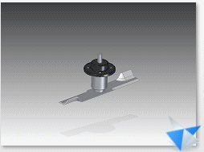
-
In the Assembly open as dialog box:
-
From the Assembly open as list, select Small Assembly.
-
From the Part activation list, select Activate all.
-
Click OK.
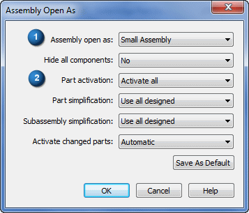
-
-
In the Open File dialog box, click Open.
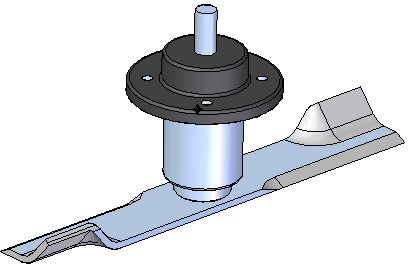
-
-
Create a modal study.
-
Select Simulation tab→Study group→New Study.

-
Select the following:
-
Study type=Normal Modes
-
Mesh type=Tetrahedral.

-
Click OK.
The Define command in the Geometry group is active. You are prompted to select one or more occurrences in the model.

-
-
In the graphics window or in Assembly PathFinder, select all three parts (Machined Hub.par, blade.par, and B-121-L.par). Click Accept on the command bar.
Note:You also can drag a selection box around the parts.
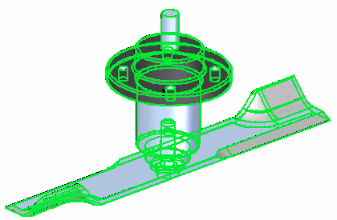
Note:The new study is listed in the Simulation pane.
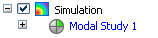
-
-
Add a fixed constraint to the hub.
-
Choose Simulation tab→Constraints group→Fixed.

-
Select the cylindrical face and the plane on the bottom of Machined Hub; right-click to accept.
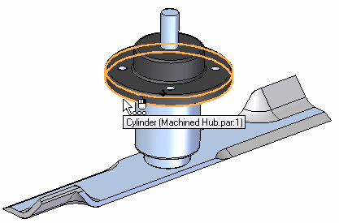
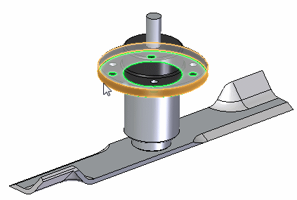
You can see the finished constraint on the model and in the Simulation pane.
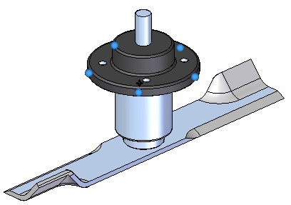
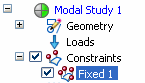
-
-
Define an assembly connector between the parts.
-
Select Simulation tab→Connectors group→Auto.

-
On the Auto command bar, select No penetration from the Connector Type list.
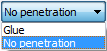
-
Verify the One connector per component pair is selected.
-
Select all three parts. You can do this by clicking the Select All Components button on the command bar.
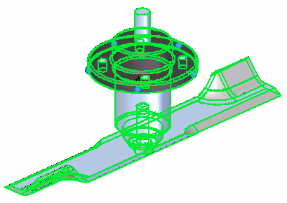
-
Click Accept on the command bar.
The connector pair information is displayed in the Results dialog box.
-
The list in the Results dialog box shows three pairs of connectors. Select all three entries and click the Create Connectors button.
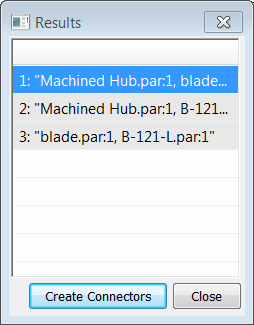
You can see the connectors in the assembly model as well as in the Simulation pane.
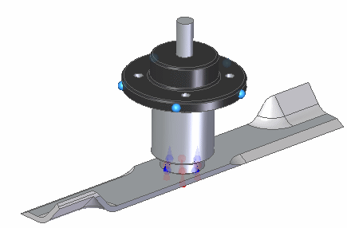
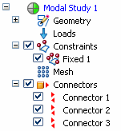
-
-
Mesh the assembly.
-
In the Simulation pane, turn off constraints and connectors.
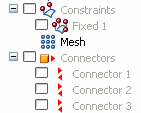
-
Select the Mesh command, and then click the Mesh button in the dialog box.
After a few moments, the entire assembly is meshed.
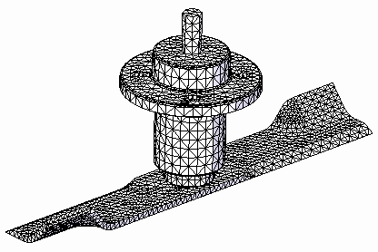
-
Select the Solve command
 .
.
-
-
When the Simulation Results environment is displayed, select Home tab→Show group→Display Options
 .
. -
In the Display Options dialog box, select the Contour, Deformation, and Color Bar check boxes. Click Close.

The result plot displays Mode 1 of the modal study.
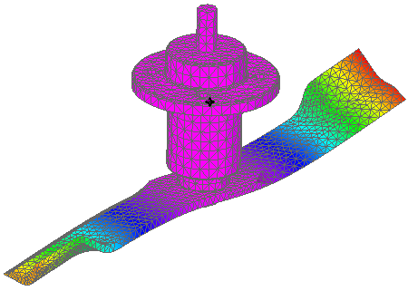
-
Display Mode 2, Mode 3, and Mode 4 of the modal analysis (normal modes) study using the Next Mode arrow on the Home tab→Data Selection group.
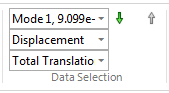
-
On the ribbon, click Close Simulation Results.
-
Increase the blade thickness by 2 mm.
-
Right-click the blade part and select Open.
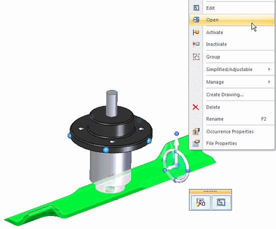
The blade part file opens in the Part environment.
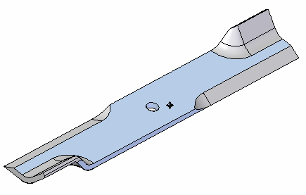
-
Select the top face of the blade.
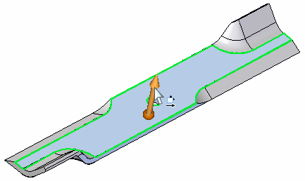
-
Select the up arrow and type 2.
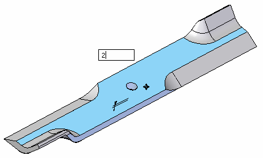
-
Press Enter, and then click to finish.
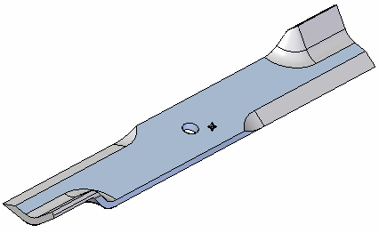
-
Save and close this file.
You are transferred back to the assembly.
-
-
Create another normal modes study named Modal Study 2.
-
As you did previously, select all of the parts in the assembly. Repeat the fixed constraint and assembly connector steps. You also can copy and paste the constraint and connectors from the first study to the second study.
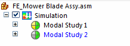
-
Mesh and then solve Modal Study 2 as you did for Modal Study 1.
-
When the Simulation Results environment is displayed, show the contours on the model.
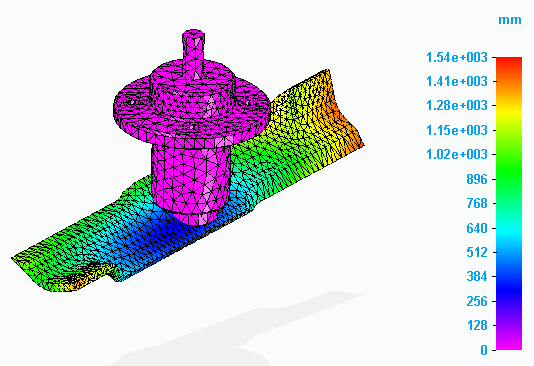
-
Compare the modal shapes between the two studies.
A normal modes analysis solves for the eigenvalues and eigenvectors of the model. For each eigenvalue (natural frequency), there is a corresponding eigenvector (mode shape of deformation).
Note the decrease in the deformation in the second study. This is due to the thicker blade.
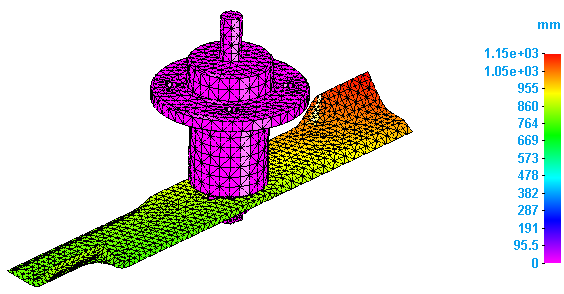
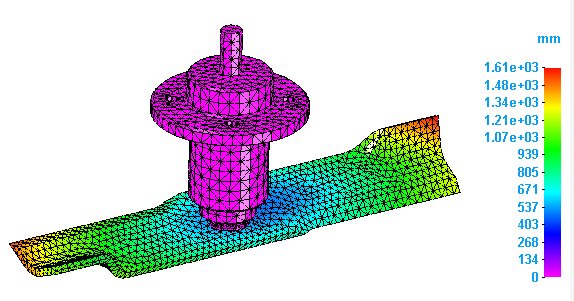
-
Save and close this file.
After solving the study initially using the default study settings, you can modify the study to solve it again for a subset of frequencies identified in the first solution. Use the Frequency range boxes on the Modify Study dialog box to specify a frequency range of interest.
In this example, the results identified the following natural frequencies for Mode 1 through Mode 4.

If you wanted to see the results in a user-defined range, for example from 2e+4 to 4e+4 Hz, then you can select the Modify Study command on the study shortcut menu to enter the lower and upper values in the Frequency range boxes.

Solving the study again shows only the results that fall within the range you defined.

After you solve a normal modes analysis, you can then use the natural frequencies as a guide to selecting the proper time or frequency step for transient and harmonic frequency response analysis, respectively. For more information, see Define and review a harmonic response study.
Reviewing the results of a normal modes analysis
The results of a normal modes analysis help you determine the natural frequencies (frequencies of free vibration) and mode shapes (the shapes of deformation) of your design. The excitation frequencies should not match the natural frequencies.
The XY plot below from Femap help shows three peaks, one peak for each of the first three modes. The Y value is arbitrary on this plot, but the X-values are an excellent way to visualize where the excitations are occurring with respect to the frequency range. Also, the width of the base of each peak represents the frequency bandwidth associated with each frequency.
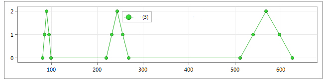